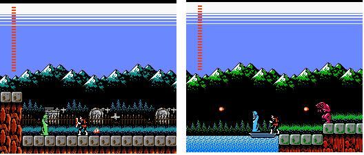

|
Castlevania 2
: Simon's Quest
เกม Castlevania 2 : Simon Quest
++ Game :: Castlevania 2 : Simon Quest
++ เครื่องเล่น :: Famicom
++ โดย :: คุณ pot
++ E-mail :: ponladetr@hotmail.com
++ จาก :: http://www.thaimisc.com/freewebboard/php/vreply.php?user=yurapol&topic=223
- - - - - - - - - - - - - - - - - - -
บทสรุปเกมส์ Castlevania 2 Simon Quest เป็นบทสรุปที่สองแล้วนะครับ
เนื้อหายังคงเป็นไกด์แนะนำสิ่งที่ต้องทำและไอเท็มหลักๆภายในเกมส์อาจไม่สมบูรณ์ถึง100%
ถ้ามีอะไรผิดพลาดก็ขออภัยไว้ด้วยนะครับ หรือต้องการให้ปรับปรุงเพิ่มเติมส่วนไหนก็ขอให้โพสบอกไว้ได้นะครับ
ไอเท็มที่สำคัญภายในเกมส์
1. Dracula's Eyeball ทำให้มองเห็นหนังสือลับที่ซ่อนอยู่ได้ หนังสือเหล่านี้จะช่วยแก้ไขปริศนาต่างๆ
2. Dracula's Nail ทำให้เราใช้แส้ทำลายบล็อกที่ Holy Water ทำลายไม่ได้
3. Dracula's Heart ใช้ขึ้นเรือข้ามฝั่งไปยังปราสาท
4. Dracula's Ring เป็นกุญแจสำคัญในการเข้าปราสาทแดร็กคูล่า
5. Dracula's Rip ทำให้เรามีโลห์ป้องกันลูกไฟได้
6. Flame Whip หรือ แส้ไฟ จะได้ก็ต่อเมื่อเรามี Morning Star และไปคุยกับคนที่ถูกขังอยู่ในบล็อก
7. Silk Bag เพิ่มจำนวนของ Laurels ทำให้เราสามารถเก็บเพิ่มได้มากขึ้น
เราจะเริ่มต้นเกมส์ที่เมือง Jova ให้เราเดินมาทางขวาลงบันไดมาเราจะพบผู้หญิงที่ใส่ชุดคลุมสีเทา
คุยกับเธอและซื้อ White Crystal มาในราคา 50 hearts ออกมานอกเมืองให้เรากำจัดศัตรูเพื่อเก็บหัวใจเพิ่ม
เก็บให้ได้ประมาณ 150 แล้วให้เรากลับไปที่ๆเราพบผู้หญิงชุดเทา เข้าประตูไปเราจะสามารถซื้อ
Holy Water ได้ในราคา 50 hearts ออกมา เดินมาทางซ้ายกระโดดไปอีกฝั่ง
เข้าประตูเราจะสามารถซื้อ Thorn Whip(แส้) ได้ในราคา 100 เมื่อเตรียมของทุกอย่างพร้อมแล้วให้เราออกจากเมืองทางด้านขวา
เดินมาเรื่อยๆหลังจากผ่านปีศาจปลาแล้วจะมีทางแยกด้านล่างากับด้านบนให้เราเลือกเดินไปทางด้านบน
พอเราเข้ามาฉากใหม่ ให้เราเดินลงบันไดยาว เดินมาเรื่อยๆเราจะมาถึงเมือง
Veros ที่นี่เราสามารถซื้อ Dagger ได้ในราคา 50 และ Chain Whip(แส้โซ่)
ได้ในราคา 150 เมื่อเราซื้อของเรียบร้อยแล้ว ให้เราออกจากเมืองกลับไปที่บันไดยาว
เดินไปทางขวาเรื่อยๆเราจะพบกับปราสาทที่ 1
ปราสาทที่ 1
เมื่อเราเข้ามาแล้วเราจะเห็นว่าเราไม่สามารถจะกระโดดขึ้นไปได้ ให้เรากด
start เลือกใช้ White Crystal จะมีพื้นเลื่อนปรากฎออกมา กระโดดขึ้นไปแล้วไปทางขวา
เราจะเจอบันไดขึ้นและลง ให้เราเลือกขึ้นบันได เดินไปทางซ้ายจะพบบันไดและบล็อกให้กระโดด
ให้เราขึ้นไปจนสุดแล้วไปทางขวา(ระวังพื้นล่องหนด้วย) ผ่านมาเราจะเห็นคนในเสื้อคลุมสีน้ำเงินเดินอยู่ข้างล่าง
ให้เราเตรียมหัวใจไว้ 50 ดวงด้วย เดินมาทางขวาลงบันไดมาประมาณสองชั้น
ให้เราเดินไปทางซ้ายเราจะพบกับคนผู้นั้น ให้เราซื้อ Oak Stake มาในราคา
50
เดินกลับมาและลงบันไดไปเรื่อยๆ (ก่อนถึงบันไดขั้นสุดท้าย ให้เราเดินไปทางขวาสุดและใช้
Holy Water ตรงกำแพง เราจะได้สมุดมาหนึ่งเล่ม) จนมาถึงบันไดอันสุดท้าย
ให้เราไปทางขวา ระวัง! พื้นล่องหนด้วย ถ้าเราตกไปต้องย้อนกลับอีกไกล
ผ่านมาได้เราจะพบกับลูกแก้วให้เรากดใช้ Oak Stake ยิงไปที่ลูกแก้ว
เราจะได้ Dracula's Rib ถ้าเรากดใช้ที่เมนูเราจะสามารถใช้โล่ได้ ต่อไปให้เราเดินกลับไปที่ทางออก
(แนะนำให้เราย้อนกลับไปซื้อ Oak Stake ก่อน) ทางลัดที่สุดคือให้เราเดินตกลงมาจากพื้นล่องหนแล้วเดินกลับมาทางซ้ายเรื่อยๆเราก็จะออกจากปราสาท
ออกจากปราสาทแล้วให้เราเดินมาทางขวาผ่าน Denis Woods และ Dabi's Path
ให้เราเดินขึ้นด้านบนเรื่อยๆ จนเราเข้ามาในฉากที่มีปีศาจลูกตาและค้างคาวบินมาด้วยกัน
ลงมาข้างล่างใช้ Holy Water ทำลายบล็อก เดินไปทางซ้ายจนสุดทางใช้ Holy
Water ที่บล็อกอีกครั้ง เราจะได้ Sacred Flame
หลังจากนั้นให้เราเดินไปทางขวาเรื่อยๆให้เราผ่านบันไดที่มีทางลงไป
เราจะพบกับเมือง Ajiba ในเมืองนี้ให้เราซื้อ Garlic กับ laurels หลังจากนั้นให้ออกจากเมืองไปทางขวากดใช้
Garlic แล้วจะมีผู้หญิงชุดแดงปรากฎออกมา เธอจะให้ Silver Knife กับเรา
กลับเข้ามาในเมือง ให้เราหาผู้ชายที่มีลักษณะเหมือนทหาร คุยกับเขาแล้วเขาจะเปลี่ยน
White Crystal ให้เป็น Blue Crystal (เขาจะอยู่ด้านบนสุดทางซ้าย) หลังจากนั้นให้เราออกจากเมืองไปทางซ้าย
เดินไปจนถึงที่ๆมีบันไดยาวลงไป เดินลงบันได ไปทางขวาเรื่อยๆ จนถึงบ่อน้ำขนาดใหญ่
ให้เรากดใช้ Blue Crystal แล้วกดปุ่มลงค้างไว้ประมาณห้าวินาทีจะมีลางลับลงไป
เดินลงไปเราจะพบกับปราสาทที่สอง
ปราสาทที่ 2
เข้าปราสาทมาให้เราเดินมาทางขวาเรื่อยๆ จนถึงที่เราเห็นว่ามีบล็อกขวางอยู่ไม่ต้องห่วงให้เรากระโดดใส่เลย
เราจะผ่านเข้าไปได้ เลยเข้าไปเรื่อยๆเราจะพบกับคนขาย Oak Stake ให้ซื้อมา
(ถ้าใครมีแล้วก็ให้ผ่านตรงนี้ไปได้เลย) เดินกลับมาทางซ้าย ผ่านบล็อกที่เลื่อนซ้ายขวามาเราจะพบบันไดทางขึ้น
ขึ้นไปเรื่อยๆจนพบบล็อกรูปตัว L ให้กระโดดขึ้นไปและไปทางขวาลงบันได
กระโดดลงมาตามบล็อกเรื่อยๆเราจะพบกับลูกแก้วลูกที่สอง กดใช้ Oak Stake
ที่ลูกแก้ว เราจะได้ไอเท็ม Dracula's Heart เก็บแล้วออกจากปราสาท
หลังออกจากปราสาทให้เราเดินทางกลับไปที่เมือง Jova(เมืองแรกสุด) เมื่อมาถึงให้ออกจากเมืองมาทางซ้ายเราจะเข้าไปที่
Belasco Marsh ให่เรากดใช้ laurels เดินผ่านบึง เดินมาเราจะเห็นเรือข้ามฟาก
เข้าไปคุยกับชายที่อยู่บนเรือ เขาจะพาเราข้ามฟากมาอีกฝั่ง เมื่อมาถึงมให้เดินไปทางซ้ายเรื่อยๆ
เราจะมาถึงเมือง Aldora ที่เมืองนี้มีชายชุดเทาที่แลกเปลี่ยนลูกแก้วสีน้ำเงินให้เป็นสีแดงด้วย
จัดการเปลี่ยนให้เรียบร้อย เสร็จแล้วให้เราเดินออกจากเมืองทางด้านซ้าย
(ในเมืองนี้มีที่ขาย Garlic และ laurels) เดินมาจนถึงฉากที่มีบันไดลงข้างล่าง
ให้เราเดินลงบันไดไป (ระวัง บล็อกล่องหนด้วย ให้เราโยน Holy Water
ไปที่ทางเดินเราจะรู้ว่าบล็อกไหนเดินได้หรือไม่ได้) ให้เราเดินไปจนสุดทาง
กดใช้ Garlic แล้วจะมีชายในชุดเขียวปรากฎตัวออกมา เขาจะมอบ Silk Bag
ให้กับเรา

หลังจากนั้นเดินกลับมาขึ้นบันได มาทางซ้ายเราจะพบกับเมือง Andole
ที่เมืองนี้จะมี Morning Star ขายในราคา 200 ซื้อเสร็จแล้วให้เราเดินกลับมาที่เรือ
ข้ามฟากกลับมา เมื่อมาถึงให้เรากดใช้ Dracula's heart แล้วกลับไปคุยกับคนพายเรือ
เขาจะพาเราข้ามฟากมาที่ปราสาทที่ 3
ปราสาทที่ 3
เมื่อเข้ามาให้เรากระโดดข้ามหนามและขึ้นบันไดมาประมาณสองชั้นแล้วเลี้ยวซ้ายและขึ้นบันไดมาอีก
เดินมาทางขวาขึ้นบันไดมา แล้วเราจะพบปีศาจที่กระโดดไปมา ให้ไปทางซ้ายเรื่อยๆจะพบทางลงด้านซ้าย
ให้เราใช้ Holy Water ข้างใส่บล็อกสองบล็อกที่มีปีศาจกระดูกยืนอยู่แถวนั้น
กระโดดลงเราจะพบกับสมุดหนึ่งเล่ม (ดูรูป) กลับมาทางที่มีปีศาจกระโดดไปมา
แต่คราวนี้ให้มาทางขวา เดินลงมาบันไดยาวกระโดดข้ามหนาม แล้วใช้ Holy
Water ขว้างใส่บล็อก เราจะได้หนังสืออีกเล่ม
หลังจากนั้นให้เราเดินมาทางซ้าย เข้ามาเราจะพบกับคนขาย Oak Stake
ให้เราจัดากรซื้อซะ หลังจากนั้นให้เราลงมาข้างล่างเรื่อยๆ แล้วมาทางขวา
เราจะพบกับปีศาจยมทูต ถ้าเราเลือกที่จะกำจัดปีศาจยมทูต เราจะได้รับ
Golden Knife แต่ถ้าเราไม่ต้องการให้เราเดินผ่านไปเลยก็ได้ เราจะมาถึงห้องเก็บลูกแก้วลูกที่สาม
กดใช้ Oak Stake เราจะได้ไอเท็ม Dracula's Eyeball หลังจากนั้นให้เราหาทางออกมาจากปราสาท
หลังจากออกมานอกปราสาทให้เราเดินไปทางซ้าย เราจะต้องกระโดดบนบล็อกไปที่ละบล็อกเพื่อจะข้ามไปอีกฝั่ง
เดินไปทางซ้ายเรื่อยๆ สุดทางเราจะพบกับผู้หญิงในชุดแดง เธอจะมอบไอเท็ม
Dimond ให้กับเรา เดินกลับไปที่เรือ (อย่าเลือกใช้ไอเท็ม Dracula's
heart เพราะเราจะกลับมาที่เดิมอีก) ข้ามฟากมาแล้วกลับไปคุยกับคนบนเรืออีก
เราจะมาอีกฝั่งหนึ่ง ให้เราเดินมาทางซ้ายเรื่อยๆผ่านเมือง Aldora และเมือง
Andole (อย่าลืมแวะซื้อ Laurels ด้วย) จนมาถึง Jam Wasteland เดินมาทางซ้ายเรื่อยๆจนเรามาถึงที่เป็นทางตัน
ให้เรากดใช้ Red Crystal แล้วกดปุ่มลง (ดูรูป) จะมีลมพายุหอบเราไปที่ปราสาทที่
4
แต่! อย่าพึ่งเข้าไปให้เราเดินมาทางซ้ายก่อน เดินจนมาถึงทะเลสาบ กดใช้
Red Crystal แล้วกดปุ่มลง จะมีทางลับลงไปข้างล่าง เดินมาทางซ้าย ให้เราเลือกว่าจะกระโดดไปตามแท่นหรือจะขึ้นไปข้าบน
แล้วเราจะพบกับผู้หญิงที่ถูกขังอยู่ข้างในบล็อกให้ใช้ Holy Water เปิดทางเข้าไป
เธอจะมอบ Flame Whip(แส้ไฟ) แก่เรา
หลังจากนั้นเดินกลับไปที่ปราสาทที่ 4 ทีนี้ให้เราเดินเข้าปราสาทได้เลย
ปราสาทที่ 4
มุ่งหน้าไปทางขวา เดินขึ้นบันไดไปข้างบน (ระวัง บล็อกล่องหนด้วย) เมื่อขึ้นมาบนสุดแล้วให้ไปทางขวา
ให้เราเดินอยู่ที่ชั้นบนสุดเรื่อยๆเราจะพบกับทางตัน ให้เรากระโดดเข้าใส่แล้วเราจะออกมาอีกฝั่งหนึ่งของกำแพง
(ดูรูป) เดินลงมาเรื่อยๆใช้ Holy Water คอยเปิดทางด้วย เดินมาจนถึงชั้นล่างสุด
ให้กระโดดผ่านกำแพงทางด้านซ้ายมือ เราจะพบกับคนขาย Oak Stake จัดการซื้อซะ
หลังจากนั้นเดินมาทางซ้ายของคนขาย เราจะตกลงมาข้างล่าง ลงบันไดมาแล้วเลี้ยวขวา
เราจะพบห้องเก็บลูกแก้วลูกที่สี่ กดใช้ Oak Stake เราจะได้ไอเท็ม Dracula's
Nail หาทางออกจากปราสาท (ขาออกจะมีกำแพงล่องหนอยู่ ให้เรากระโดดเข้าใส่เลย)
เมื่อออกมานอกปราสาทแล้ว ให้เรากลับไปที่ๆเราได้ Flame Whip แต่คราวนี้ให้เราเลยไปทางซ้ายเรื่อยๆ
เราจะออกมาข้างนอก หลังจากนั้นให้เราใช้ Holy Water กับบล็อกที่อยู่ติดกันสองอัน
เราจะได้หนังสือมา (ดูรูป)
หลังจากนั้นมาทางซ้ายกระโดดบนบล็อกมาเรื่อยๆ เราจะมาถึง Joma Marsh
กดใช้ Laurels ผ่านบึงไปให้ได้ เราจะมาถึงปราสาทที่ 5
ปราสาทที่ 5
หลังจากเข้ามาแล้วให้เราเดินมาทางขวา ขึ้นบันไดแรกที่เห็น เดินมาทางซ้ายและขึ้นบันได
มาจนสุดบันไดแล้วเลี้ยวขวาเดินมาเรื่อยๆจนกระทั่งตัดเข้าฉากใหม่ ให้เราเดินขึ้นไปด้านบนก่อนแล้วเราจะพบกับคนขาย
Oak Stake
หลังจากนั้นกลับมาทางเดิม ลงมาข้างล่างจนสุดเราจะพบกับชายคนหนึ่งเขาจะให้
Laurels กับเรา กระโดดข้ามบล็อกมาทางขวาเรื่อยๆ เราจะพบกับปีศาจหน้ากาก
กำจัดแล้วเราจะได้ Magic cross เดินเข้าห้องถัดไปเราจะพบลูกแก้วลูกที่ห้า
กดใช้ Oak stake เราจะได้ไอเท็ม Dracula's Ring มา หลังจากนั้นให้เดินออกจากปราสาท
ออกจากปราสาทแล้วให้เดินกลับมาทางขวาเรื่อยๆ เราจะผ่านปราสาทที่ 4
ผ่านเมือง ผ่านสะพานที่มีปลากระโดดขึ้นมา ผ่านบึงเล็กๆ จนมาถึงทางที่มีบันไดยาวทอดลงไป
ให้เราลงบันไดไปข้างล่าง เดินผ่านเมืองไป เราจะมาถึงสุสาน เดินมาทางขวาเรื่อยๆเราจะพบกับบล็อกที่ขวางสะพานไว้
ให้เราใช้ Holy Water เปิดทาง เดินข้ามสะพานไป ในที่สุดเราก็มาถึงปราสาทของแดร็กคูล่า
ปราสาทแดร็กคูล่า
ทางในปราสาทนี้สั้นมากจึงอยากให้เพื่อนๆเล่นเองนะครับ เมื่อถึงชั้นในสุดเราจะพบกับแดร็กคูล่า
กำจัดมันให้ได้ เป็นอันจบเกมส์
Ending
จะมีด้วยกันอยู่ 3 แบบ
แบบที่ 1 Good Ending เราจะต้องเล่นเกมส์ให้จบภายในเวลา 8 ชั่วโมงโดยไม่คอนตินิวเลย
แบบที่ 2 Normal Ending เราจะต้องเล่นเกมส์เกินกว่า 8 ชั่วโมงโดยคอนตินิวด้วยจำนวนน้อยครั้ง
แบบที่ 3 Bad Ending เราจะต้องใช้เวลานานมากในการจบเกมส์และคอนตินิวมากครั้ง
* Note : ดูฉากจบทั้ง 3 แบบ ได้จาก http://www.vgmuseum.com/
Good Ending
(สังเกตุรูปล่างสุดให้ดีนะครับ)
Normal Ending
Bad Ending
Password
OFIC M5YX XD4C Q3AA --- thorn whip/holy water
OFIT M5QX 1P5S QBQA --- rib/chain whip/blue crystal
SZMH QXE1 5PXW UESE --- w/ heart
TIRH DYDZ 4O5V 81B1 --- w/ nail/flame whip/red crystal
MLIE WUCW VNKU SCBC --- ring/cross
RIG7 NVFX E45V 07BT --- Kill Dracula for the first ending
OYZY UQAU R12S SMIA --- Kill Dracula for the second ending
C1DF O26D L1KN SWJK --- Kill Dracula for the third ending
Password อ้างอิงมาจากเว็บ Castlevania
Dungeon
Map
http://www.classicgaming.com/castlevania/cv2-fullmap.jpg
แผนที่อ้างอิงไปยังเว็บ Castlevania
Dungeon
|